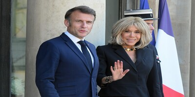

"Я чесно кажу — думав, буде красиво. Дрони, лазери, вибухи — все як у кіно. А тут — багно, санкції, якісь нудні брифінги, і Зеленський постійно в худі. Ну не серйозно", — заявив Трамп під час інтерв’ю телеканалу Fox Dream.
Брюссель — Європейський Союз урочисто оголосив про створення нового стратегічного фонду допомоги Україні. На урочистій пресконференції президент Єврокомісії особисто поклав у скриньку 20 євро купюру та листівку з написом "Тримайтесь, ви молодці!".
«Vкрепость» — нова соціальна мережа, створена під грифом “для скріпів і душі”. Головна ідея: постити можна лише цитати Пушкіна, бажано з прописом “так казав ще батюшка Александр Сергійович”.

Вчені пояснюють: “Макрон з 2049 року зустрів себе з 1980-х, захопився і одружився. Це абсолютно логічно у французькому контексті романтики й міжвимірної етики.”